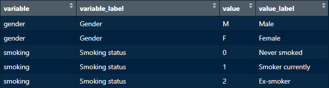

Razón de ser
Although new pragmatic platforms (such as RedCap) currently exist,
great deal of research data is still being collected directly in
excel, where it is easier to code variables in a
short form. For example, “birth date” is commonly coded in
a short form as “dob” instead of “Date of birth”, which is
the publication form. The same applies to the
values of variables, such as “F” and “M”, which are both
values for the “Gender” variable, and stand for “Female” and “Male”,
respectively.
Recoding variables and their values back to their publication form is an inevitable task during statistical analysis and reporting results.
The recode_vrs() function helps effortlessly transform
collected data into a publication-ready format using a user-supplied
data dictionary. Combining recode_vrs() with a
data dictionary ensures consistency in
recoding research terms across all analyses and publications as one
could easily forget how a variable or a term was expressed in a previous
analysis or publication. The recoded data can then be further used make
figures, table one…etc.
Terminología
In the above introduction, we have mentioned 4 terms:variable, such as “gender”: this is the
short form of a variable usually used un excel
sheets.variable label, such as “Gender”: this is the
publication form that we usually encounter in summary
tables.value, such as “F” and “M”, which are both values for the
“Gender” variable.value label, such as “Female” and “Male”, which are the
labels of the “Gender” values “F” and “M”, respectively.
The inflammatory bowel disease (ibd) data dictionary provided in the
phdcocktail package consists of 4 columns, one for each of
the above-described terms.
library(phdcocktail)
data(ibd_data_dict, package = "phdcocktail")
View(ibd_data_dict)
All 4 columns are required in order for recode_vrs() to
function as needed. Therefore, user-supplied data dictionaries
should logically include the same columns!
Uso
When passing a data frame with raw data and a data dictionary to
recode_vrs(), the function will:
Search the data dictionary for
variables labelsfor all variables, and attach these to the corresponding variables in the original data frame as “label attributes”. these attributes can be recognized bygtsummary::tbl_summary()or other functions for printing.Search the data dictionary for
values labelsonly for variables specified in thevrsargument. These values will be “recoded” to their corresponding labels.If the
factorargument is set toTRUE, variables specified in thevrsargument will be converted toordered factors, and the order of the levels will be inherited from the order of appearance of the values in the data dictionary. Theseordered factorsare important to have the desired display of levels when passing the resulted data frame to functions fromggplot2,gtsummary…etc.
To see recode_vrs() in action, we will make table one
from the ibd_data1 available with the package:
Let’s first view this data frame…
We can see that variables and their values are stored in a
short form. We can make a table one using the data in its
current form, but it won’t be suitable to be published!
library(gtsummary)
theme_gtsummary_compact() # to make a compact table
ibd_data1 |>
tbl_summary(include = -"patientid") # we don't need patient IDs in our tableNow let’s recode this data frame using recode_vrs(), and
view the new, recoded data frame, which we name here as
ibd_data_recoded…
ibd_data_recoded <- recode_vrs(data = ibd_data1, data_dictionary = ibd_data_dict,
vrs = c("disease_location", "disease_behaviour", "gender"), factor = TRUE)
View(ibd_data_recoded)We can notice two changes in the new data frame compared to the
original one:
Variables labels are now attached as “attributes” underneath variables names for all variables for which a corresponding variable label could be found in the supplied dictionary.
Values have been replaced by their labels for variables specified in the
vrsargument.Variables specified in the
vrsargument have been converted toordered factors.
Finally, let’s make table one from the new recoded data…
ibd_data_recoded |>
tbl_summary(include = -"patientid")Some questions that might come to mind…
Why not “recode” variables to their labels? who only attach these labels as “label attributes”?
If we would recode variables names by their labels, then one would have to change the code in the subsequent steps in the analysis because variables names have changed! Since variable labels are only needed to print labels, attaching them only as “attributes” is a nice way to provide publishable names, but in the same time preserve original variable names.Why not simply pass these variables labels directly to
gtsummary::tbl_summary()?
This would be tedious and a waste of time to do each time assuming that one is working with the same topic/disease. In addition, this is hugely prone to errors and inconsistencies across analyses and papers.How is
recode_vrs()different thanHmisc::upData()?
InHmisc::upData(), one would repetitively have to provide a list/vector with labels to thelabelargument, and this list/vector should be of the same length as the original data frame. Inrecode_vrs(), none of these conditions is required.recode_vrs()will automatically search for “whatever” variables labels it could find in the data dictionary. (attaching labels as attributes have no side effects or harm on other analyses steps! so why not simply gettin ’em all!)How is
recode_vrs()different thanexpss::apply_labels()?
Inexpss::apply_labels(), one would also need to pass the labels manually.